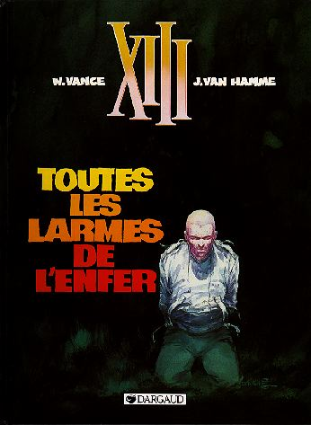
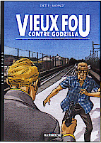
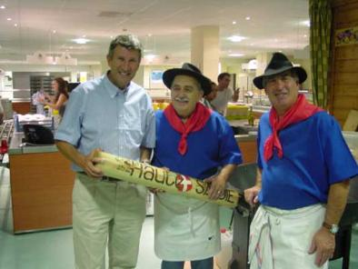

about me
 Software:
Software:
Torta
Karmack
Plata
FUmanchu!
Rants:
AboutMe
Blogging
El origen del hombre americano
Propositos2006
Propositos2007
SWFing
Pictures:
Sicilia -
thumbs
Visita Dimo 2007 -
thumbs
Tokyo -
thumbs
Barcelona -
thumbs
Lisbon -
thumbs
Gilberto Gil -
thumbs
Visita Fidel -
thumbs
Hiver -
thumbs
Dogs -
thumbs
Italy -
thumbs
Eurockeennes -
thumbs
Grenoble -
thumbs
Chipie -
thumbs
Place aux Herbes -
thumbs
Eek Friends:
 Alejo Alejo
Javier
Nelson
Old Posts:
Archive
Created with:
emacs
bash
libXSLT


 Dimo's Art
Quebec Hispano
Dimo's Art
Quebec Hispano
|
|
2004 - February |
|
Yo creo (y es solo una creencia) que el 99% de los que leen las tiras cómicas de El Tiempo leen todas, todas menos una. Si, ya todos saben de cual estoy hablando : la infame Modesty Blaise. Mientras casi todas (o todas?) las demas tiras son chistes cortos y auto-contenidos, las de Modesty son "serias" y parte de una historia mas larga, que al partirlas en tiras de a tres viñetas diarias se hace eterna. Personalmente, solo una vez leí completa una de las series, en la que Modesty, una especie de agente especial o algo así, desmantela una red de trata de blancas. Obviamente, la voluptuosa espía tiene que infiltrarse dentro de esta red para poder entrar en acción, lo que nos da la oportunidad de regalarnos con los dibujos de miss Blaise con las vestimentas (o falta de ellas) que corresponden a una victima de los proxenetas.
He citado a Modesty simplemente para decir que es el tipo de B.D. que nunca me ha llamado la atención. El dibujo demasiado realista, la trama semi-policiaca, y la estetica setento-ochentosa. Bah.
Y sin embargo.
XIII es una serie que se ha ganado el mote de "La BD culte", con miles de seguidores ultra-fanaticos. A pesar de corresponder a los parametros tipo Modesty Blaise, me decidí a tomar prestados los 5 primeros tomos, para ver cual era la fascinación. Y quede fascinado. La historia es bien hecha y muy elaborada : un par de viejos descubren a un hombre herido de bala en la cabeza en una playa. El hombre tiene un tatuaje en el hombro : XIII y ha perdido completamente la memoria. Poco a poco se va descubriendo un complot gigantesco para asesinar al presidente de los Estados Unidos. Los personajes son creibles e interesantes. Aunque la historia se desarrolla en Estados Unidos, los creadores de XIII son, por supuesto, belgas. Un verdadero recomendado.

P.D. : Perdón por tanto post sobre BDs, pero ultimamente no tengo nada mas interesante que escribir.
|
|
|
koppa.imag.fr is off. The Evil List is dead. Sniff.
Happy Birthday Javo!
|
|
Segun las estadisticas, estas son las busquedas mas frecuentes con las
cuales llega la gente a esta pagina:
1 bombombum
2 bogota blog
3 como se hace un bombombum
4 evil robot
5 apocalipsis robot
6 blog desde bogota
7 chiken dance
8 clase del robot del mundo
9 colombianismos
10 como hacer un robot
11 cual es el pais mas peligroso del mundo
12 dibujo robot
13 donde jugar paintball en bogota
14 galactus
15 guille suit
16 i'm stepping through the door
17 lenguaje de programacion scheme
18 lenguaje programacion scheme
19 lexicon de colombianismos
20 natalia paris
En negrilla mis favoritas. Que pobre diablo llegaria a mi pagina
mientras buscaba la formula secreta del bombombum?
Fascinante.
|
|
I'm pleased to announce the immediate disponibility of a new version of Karmack, your favorite doom themed cpu load monitor KDE panel applet.
New features include:
- Skins engine. Right now there are only 3 skins, including the traditional doom one.
- ToolTip displaying CPU usage details
- Bakground color config.
|
|
El hecho de estar bajo una "bourse cifre" significa que tengo que trabajar al mismo tiempo en un laboratorio de investigación y en una empresa que financia el trabajo. Las diferencias entre los dos sitios es grande:
- En el laboratorio tengo una oficina para mi solo. En la empresa tengo un cubiculo compartido por otras dos personas, justo al frente de la oficina del jefe.
- En el laboratorio tengo un pentium a 2 gigahertz, corriendo GNU/Linux y KDE perfectamente afinados para mi gusto. En la empresa tengo una estacion Sun lentisima, corriendo un Solaris de hace quien sabe cuanto, y CDE, la interfaz de usuario de ventanas mas horrible jamas inventada por el hombre.
- Al laboratorio llego en 10 minutos en tramway, a la empresa llego en media hora en bus.
- La pause-café en el laboratorio significa echarme como una bestia en un sillón a hablar pendejadas durante 20 minutos, con un café medianamente decente. En la empresa significa ir corriendo a tomarse en 3 minutos un café asqueroso, de máquina.
- En el laboratorio hay una conexión a internet T3. En la empresa la conexión internet es super lenta, y solo tengo derecho a visitar los sitios de la IEEE, ACM, y otros por el estilo.

En fin. Ahora si, Las cinco del viernes. El pasado viernes, como de costumbre, tome prestadas varias bandes desinnées : "Aprés l'Incal", primer tomo. (Jodorowsky, Meobius). Bajo la recomendación de Engel, tiene buena cara. Aun no lo leo. "Le retour du vieux fou" y "Vieux fou contre godzilla", (Moynot / Dieter). La primera parte de esta saga ya la habia leido ("Vieux fou", a secas). BD sin mayores pretenciones, sobre un viejo militante catalán reducido a una existencia miserable y decadente en un apartamentico de Barcelona, que decide dar un golpe contra uno de los gangsters locales con la ayuda de otro poco de viejos (viejos locos, claro esta). El dibujo no es extraordinario. Una BD divertida, de cualquier manera. "Le vaisseau de Pierre", (Bilal, Christin). Una de las obras viejas de Bilal. Personalmente no me gustó mucho. La historia se desarrolla en un pequeño pueblo en Bretagne, amenazado por un proyecto turístico. Al dibujo no se le puede reprochar mayor cosa. "Fort Wheeling" del inigualable Hugo Pratt. Relato típico de Pratt, compuesto por varias aventuras esta vez en los territorios salvajes de norteamerica. Como de costumbre en la obra de Pratt, la obra esta centrada más en los personajes que en la historia en si misma.
Pasando a otro tema, parafrasearé a uno de los grandes pensadores de nuestra era : I thought this would be completely obvious to anyone but lately I've come across some incredibly weird persons. Leyendo las discusiones en los blogs, flamewars en los comentarios, etc, me he dado cuenta que mas de uno olvida con facilidad una de las reglas básicas de cualquier discusión, la regla de oro, sintetisada en la siguiente frase (cito) :
"El que se deliquea, pierde."
Frase de otro gran pensador de del cual no dare el nombre. No diré nada mas al respecto.
|
|
| |
Give me
Your dirty love
Like some tacky little pamphlet
In your daddy's bottom drawer
|
Frank Zappa - Dirty Love
|
|
|
En general, las obras literarias que me parecen mas interesantes son aquellas escritas por personas que han tenido una vida extraordinaria y que por lo tanto tienen muchas cosas que contar. Las novelas que mas me atraen han sido escritas por quienes han estado en la guerra, o en la carcel, o han sido desechables, criminales, dementes, agitadores profesionales, vagos, esclavos en una galera, drogadictos o herejes.
El blogueador típico, como yo, para el cual la palabra "riesgo" significa dejar el computador prendido durante una tormenta eléctrica, que no abandona la casa materna hasta no tener una cierta comodidad asegurada en otro lado, que salvo casos muy excepcionales puede decir lo que va a estar haciendo el proximo mes sin temor a equivocarse, que no ha tomado ninguna decision radical en la vida, esta condenado a no escribir sino ensayos insulsos, poesia desabrida, cuentos intrascendentes o posts tan pendejos como este.
|
|

nativos de haut savoie
Receta de la Tartiflette (4 personas) :
Se cocina 1 kilo de papa pelada, no mucho tiempo, que quede un poco dura. se parte en rodajas medianas. Se sofrie por otro lado mas o menos un mug bien lleno de tocino en pedazos con 1 cebolla picada. Se mete todo en una paila enmantequillada, se agregan dos tasas pequeñas de crema de leche, y encima se ponen un queso reblochon cortado en pedazos. Se hornea a 450 grados como por media hora.
Este fin de semana Andrea y yo nos quedamos en la casa de unos amigos que viven en Chambery, en el corazon de la Savoie, tierra de esta grasosa (tocina, crema de leche, reblochon 60% grasa...) y deliciosa receta.
Alimentos como la grasa y el azucar son al mismo tiempo altamente energeticos y dificiles de conseguir en un medio salvaje. Por eso todos tenemos desarrollado el gusto animal por este tipo de comida: la comemos con placer cada vez que podemos y sin reparos. Hoy en dia la humanidad (sobre todo en los paises ricos) puede poner en la boca de cada uno cantidades altisimas de grasa y azucar, que instintivamente nos siguen atrayendo tanto como si fueran escasos. Esto ha pasado de manera tan rápida que la evolución aun no ha tenido el tiempo de corregir el hecho de que tanta grasa y azucar sea peligrosa para la salud. Asi que, querido lector, no se sienta mal por su gordura: en realidad no es culpa suya.
|
|
|

 Save this post]
Save this post]